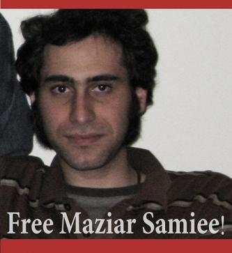

|
|
مازیار سمیعی بازداشت شد
پنج شنبه15 بهمن 1388
تغییر برای برابری : مازیار سمیعی فعال دانشجویی و از فعالان کمپین یک میلیون امضا شامگاه گذشته در منزل

خود بازداشت شد. طبق گفته مادر وی پنج نفر از ماموران لباس شخصی نیمه شب دیشب وارد خانه شدند و پس از تفتیش منزل، مازیار را به همراه تعدادی کتاب، کیس کامپیوتر و دست نوشته هایش با خود به مکان نامعلومی انتقال دادند. این ماموران به خانواده سمیعی گفته اند که او خود تماس خواهد گرفت و از محل بازداشت خود خبر خواهد داد و نیاز به پیگیری دیگری نیست.
شایان ذکر است هیچگونه توضیحی درباره علت بازداشت مازیار سمیعی داده نشده است و حتی زمانی که مادر او قصد خواندن حکم را داشته ماموران امنیتی حکم بازداشت را به بهانه کمبود وقت از دست او گرفته اند.
مازیار سمیعی پیش از این نیز در سال 86 به دلیل فعالیت های دانشجویی 10 روز را در زندان اوین گذرانده بود که پس از آن حکم برائت برایش صادر شد.